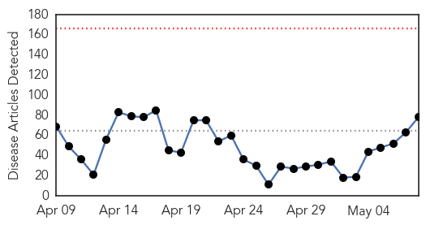
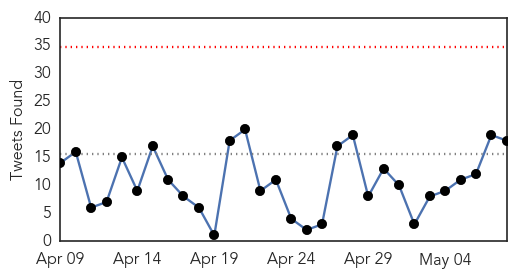

Ebola
30-Day Web Trend
0 alerts, 0 warnings

30-Day Twitter Trend
0 alerts, 0 warnings

Article Locations
Article Confidences
Top Articles:
- 1.000
- Liberia declared Ebola-free, but outbreak continues over border
- 1.000
- Ebola is (still) living in an American doctor’s eye
- 1.000
- Liberia to be declared Ebola-free tomorrow
- 1.000
- Ebola Found Living Inside The Eye Of Virus Survivor
- 1.000
- Ebola in US: Disease is living in an American doctor's eye
- 1.000
- UN: Lowest number of new weekly Ebola cases in West Africa
- 1.000
- Liberia declared Ebola-free, but outbreak continues over border
- 1.000
- Ebola Hemorrhagic Fever
- 1.000
- On Saturday, The Ebola Outbreak In Liberia Should Officially Be Over
- 1.000
- Liberia to be Declared Ebola Free
- 0.999
- Ebola Virus Lives On In Recovered Patient's Eye
- 0.999
- Liberia set to be declared Ebola-free
- 0.999
- Ebola found in doctor’s eye months after virus left blood
- 0.999
- Ebola Found in Man's Eye Months after it Left Blood — Naharnet
- 0.999
- Doctor cured of Ebola finds virus lurking in his eye, turning it from blue to green
- 0.999
- Ebola lurks in doctor's eye after medic was 'cured' but resilient virus turned iris from blue to green
- 0.999
- An American woman's fight to stop Ebola with technology
- 0.999
- Ebola discovered in patient’s eye months after being cleared — RT USA
- 0.999
- Liberia’s Ebola epidemic ends
- 0.998
- Liberia Ebola outbreak to be declared over after yearlong struggle, 4,700 deaths
- 0.998
- American Ebola Patient Considered Cured of the Disease Saw Something Very Strange Happen to His Eye
- 0.998
- Free at Last! (But Not Forever)
- 0.998
- Ebola found in man's eye months after it left blood: report
- 0.998
- Liberia set to be declared Ebola-free 08/05/2015
- 0.997
- Kenya : Liberia declared Ebola-free with no case of disease reported in 42 days
- 0.997
- As Ebola Leaves Liberia, Measles Makes A Forceful Comeback
- 0.997
- Deadly Ebola virus lurked and grew in eye of 'cured' physician, doctors discover
- 0.997
- Ebola Virus Found in the Eye of the Survivors
- 0.996
- Four Reforms Needed to Handle the Next Big Ebola Epidemic
- 0.996
- Former US leader Clinton praises Liberia progress on Ebola
- 0.996
- American doctor cured of Ebola finds the virus in eye
- 0.996
- News Scan for May 08, 2015
- 0.995
- Government Of Canada Thanks Canadian Health And Humanitarian Workers For Their Efforts To Assist Crisis-affected Populations
- 0.994
- Virus Survived And Grew In Eye Of Former Patient, Doctors Discover
- 0.994
- US Ebola patient declared cured for months has it in his eye, turning it from blue to green
- 0.991
- The Liberian Observer
- 0.991
- Ebola Found To Linger In The Eye
- 0.990
- Volunteering in the ebola zone
- 0.990
- Remarks by International President of MSF Dr. Joanne Liu at the Gates Foundation Global Partner Forum
- 0.989
- 'WHO reform needed' after Ebola failure
- 0.988
- Ebola’s silver lining: Guineans learn to have faith in hospitals
- 0.988
- Guineans learn to have faith in hospitals
- 0.988
- Doctor 'cured' of Ebola months ago found the virus lurking in his eye, which turned from blue to green
- 0.986
- Doctor's Eye Turns Green From Infection
- 0.985
- Doctor 'cured' of Ebola had the virus in his eye
- 0.984
- Y's Men hear about coping with the Ebola crisis
- 0.980
- How Castro’s doctors could stop the next Ebola outbreak
- 0.979
- Missionaries to return to Liberia
- 0.978
- Guinea: Traditional healers support Ebola response at the risk of personal hardship
- 0.975
- American doctor finds Ebola virus hiding out in his eye
Showing top 50 articles...
Top Tweets:
- 1.000
- soutient l'Afrique contre Ebola. @airtelrw @RFIAfrique
- 0.997
- Liberia conducts first polio, measles immunizations since Ebola outbreak. - World Health Organization http://t.co/4d0dTXzbRf ebola EVD
- 0.985
- Ebola virus found lurking in doctor's eye - CBS News http://t.co/BipbaP9gYE ebola EVD
- 0.974
- Liberia conducts first polio, measles immunizations since Ebola outbreak. - World Health Organization http://t.co/XHj8WrZKPN
- 0.970
- May 8 news pouch on avianflu avianinfluenza Ebola EbolaResponse MERS NepalQuake Health http://t.co/oUwNcjMMbT
- 0.959
- As Ebola Leaves Liberia, Measles Make A Forceful Comeback - NPR (blog) http://t.co/USsoPpTROP ebola EVD
- 0.952
- As Ebola Leaves Liberia, Measles Makes A Forceful Comeback - NPR (blog) http://t.co/v23dSg8J1G ebola EVD
- 0.940
- Ebola found in US doctor's eye months after virus left blood - WPRI 12 Eyewitness News http://t.co/Ai54lMCmBy ebola EVD
- 0.935
- Liberia's Ebola epidemic is almost over - Science /AAAS http://t.co/zlDzB1gXEo ebola EVD
- 0.928
- A retrospective and prospective analysis of the west African Ebola virus disease epidemic who http://t.co/9L7UztMXaK
- 0.897
- American doctor declared free of Ebola finds the virus in his eye months later - CNN http://t.co/owDEpIgM63 ebola EVD
- 0.897
- American doctor declared free of Ebola finds the virus in his eye months later - CNN http://t.co/Jmkxal43pY ebola EVD
- 0.897
- American doctor declared free of Ebola finds the virus in his eye months later - CNN http://t.co/86AylXWOiM ebola EVD
- 0.859
- Guinea: Traditional healers support Ebola response at the risk of personal ... - International Fed... http://t.co/Kwljbydx6F ebola EVD
- 0.849
- L’étrange passage d’Ebola dans l’œil d’un ancien malade atteint du virus maladieoculaire http://t.co/PNk0MbukRG via
- 0.828
- Persistence of Ebola Virus in Ocular Fluidduring Convalescence | @nejm http://t.co/Thcwq1IjJe
- 0.795
- Ebola is found in doctor's eye months after virus left blood - http://t.co/B1r6MRg8NG - AOL News http://t.co/SjuxdQIZRw ebola EVD
- 0.795
- Blindness, deafness and other after effects of Ebola currently affecting survivors. Ebola is not over, we are... http://t.co/wg94XmAEE4
- 0.766
- Liberia to be Declared Ebola-Free Saturday - Voice of America http://t.co/dMazI4DgaA ebola EVD
- 0.730
- Why this Seattle cancer biotech is pouring resources - and $3M - into Ebola ... - Puget Sound Busi... http://t.co/odJ5bc5JVt ebola EVD
- 0.705
- Liberia conducts first polio, measles immunizations since Ebola outbreak. http://t.co/hpmithVm8U via
- 0.693
- RT: .@NHA_EPNEWS RT Ebola Virus Lives on Hospital Surfaces for Days - Live Science http://t.co/WePsbaQVuL
- 0.687
- After Nearly Claiming His Life, Ebola Lurked in a Doctor's Eye - New York Times http://t.co/fDxP19AJLY ebola EVD
- 0.684
- RT: .@WHO and partners in Liberia conduct first polio & measles immunizations since the Ebola outbreak started http://t.co/e09…
- 0.681
- Le Conseil du Fonds de solidarité «Africa Against Ebola» a nommé Carl Manlan au poste de Secrétaire exécutif à compter du 1er mai 2015.
- 0.680
- The boy with Ebola who called me mother - International Federation of Red Cross and Red Crescent S... http://t.co/VoQR68utpa ebola EVD
- 0.651
- Beating Ebola? It's a matter of trust - WPTZ The Champlain Valley http://t.co/L1qlLY7QHC ebola EVD
- 0.644
- How Cuba Could Stop the Next Ebola Outbreak http://t.co/jVdfIRkS27
- 0.600
- Markus et Tiken Jah Fakoly @ La conference de presse du lancement du concours de chant Africa Stop Ebola http://t.co/Ia6Al8L4XV
- 0.597
- La conference de presse du lancement du concours de chant Africa Stop Ebola @ Conakry Guinee http://t.co/5RzmNN4yOi
- 0.558
- Liberia's Ebola epidemic is almost over - Science /AAAS http://t.co/D3mvqoEHJc
- 0.539
- Ebola found in American doctor's eye - http://t.co/Prac8bdRK9 http://t.co/i6hZapTk6F ebola EVD
- 0.512
- MSFsci What is being done about Ebola aftereffects? sight +hearing problems reported in West Africa and USA http://t.co/3N1iOAHLxB
- 0.509
- Global healthsecurity: the wider lessons from the west African Ebola epidemic lessonslearned http://t.co/1Ce6mrbuRa
West Nile Virus
30-Day Web Trend
3 alerts, 5 warnings
30-Day Twitter Trend
0 alerts, 0 warnings

Article Locations
Article Confidences

Top Articles:
Top Tweets:
-
No tweets found for May 08, 2015